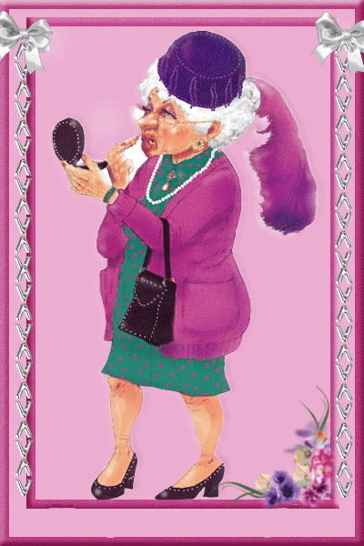

Dowcipy o szkole
Dowcipy o Szkole
Nauczycielka pyta dzieci:
- Jakie macie zwierzęta w domach?
- Ja mam psa.
- A ja mam kota.
- A ja mam kurczaka w zamrażarce... - mówi Jaś.
Dowcip o teściowej
Żarcik o teściowej
 Kolega w barze do drugiego:
- Ostatnio moją teściową w lesie pogryzły żmije.
- O ludzie to straszne!!!
- Tak, strasznie się wiły przed śmiercią.
Dowcipy o Blondynkach
żart o Blondynce
. Czemu blondynka kuca w sklepie?
- Bo szuka niskich cen
nazwisko ucznia
.
imie ucznia
Bogdanowicz Kacper